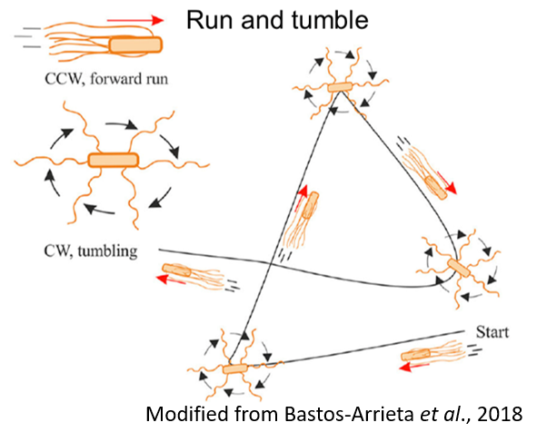
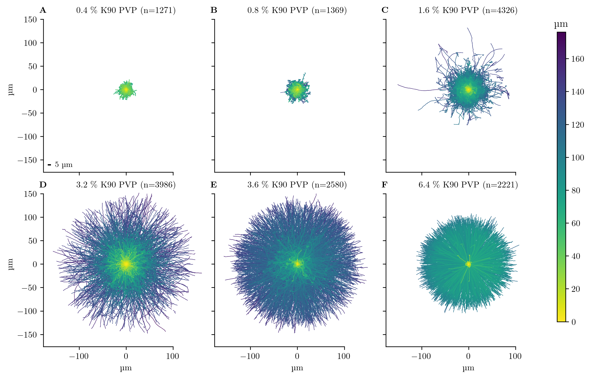
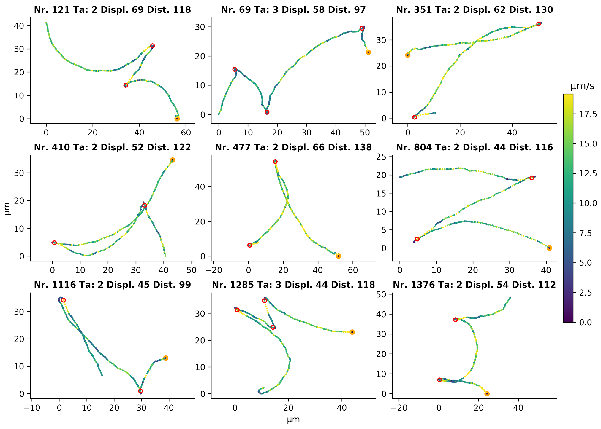
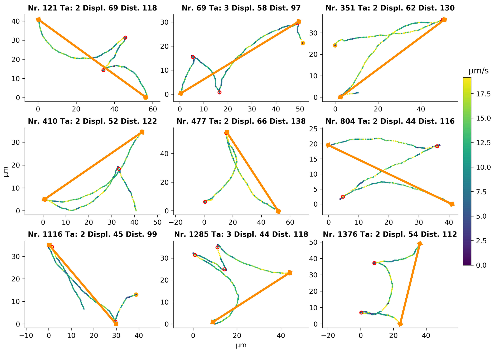
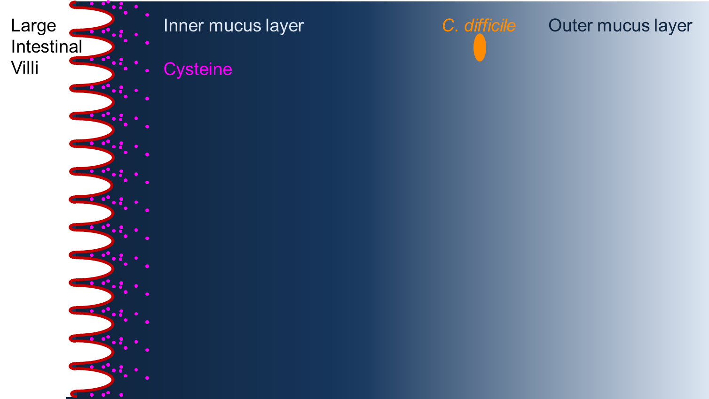
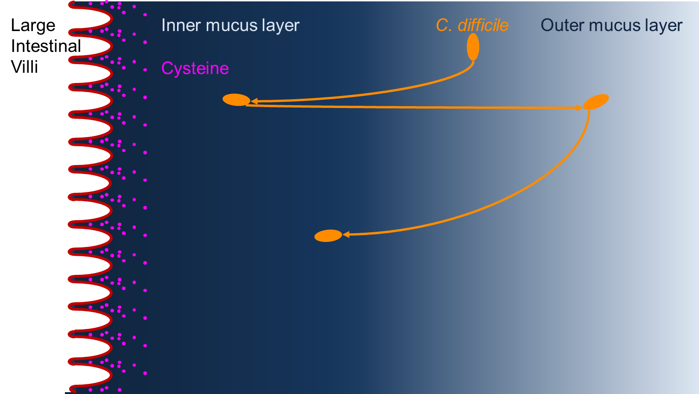
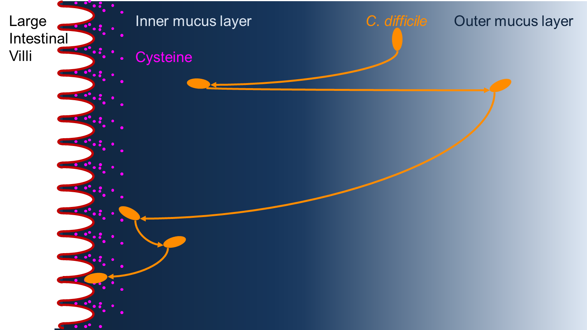

CDInfect Meeting
Chemotaxis of
Clostridioides difficile
UMG
PI: Prof. Uwe Groß
PI: Dr. Wolfgang Bohne
Dr. Julian Schwanbeck
2. 12. 2020, Göttingen
Introduction: Initial Aim of the Project
- Almost all sequenced C. difficile strains possess one chemoreceptor and corresponding chemotaxis machinery
- The main chemotaxis machinery (MCP, CheY, CheW) is needed for signal sensing and transduction
- Flagellar motility is a requirement for chemotaxis
- Detailed analysis of chemotactic behavior requires observation of
single cells
- For example “run and tumble” in E. coli

Motility in liquid medium
- No noticeable
displacement
- Very high rate
of trembling
Motility with Polyvinylpyrrolidone
PVP is a high molecular weight polymer







Future Perspectives and Collaborations
- Establish chemotaxis assay on a single cell basis, for example microfluidic based assay
- Test candidate substrates (from metabolomic studies in the consortium) for their influence in chemotaxis
- Generation of knock-out mutants for chemotaxis genes and test for chemotaxis defects
- Test mutants from the Consortium for defects in chemotaxis
- If prior work is promising confirm hypothesis in an animal model
Thank you for your Attention & Cooperation
Prof. Jörg Overmann
Dr. Thomas Riedel
Prof. Rolf Daniel
Dr. Heiko Liesegang
Dr. Michael Hoppert
Ines Oehmig
Dr. Andreas Zautner